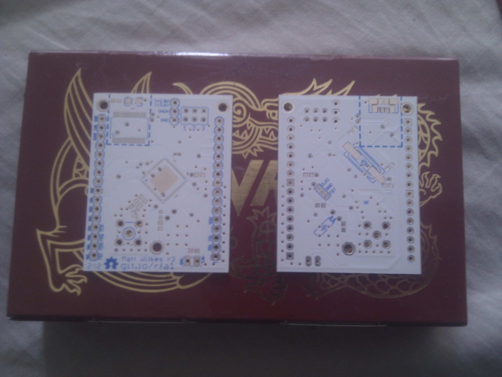

A breakout board for the Atmel ATMega128RFA1
This is open source hardware, licensed under the CERN open hardware licence.
This is a development board for the ATMega128rfa1 with optional USB interface.
It is intended to be a minimal viable board for low power applications, hence the low level of LEDs. Programming of the chip can be done with minimal components installed (just the decoupling capacitor is required), but viable RF is expected to take a lot more.
The revision three boards look like 